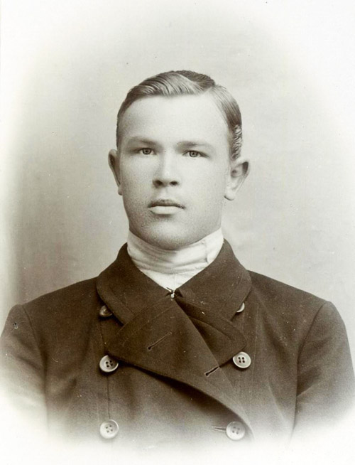
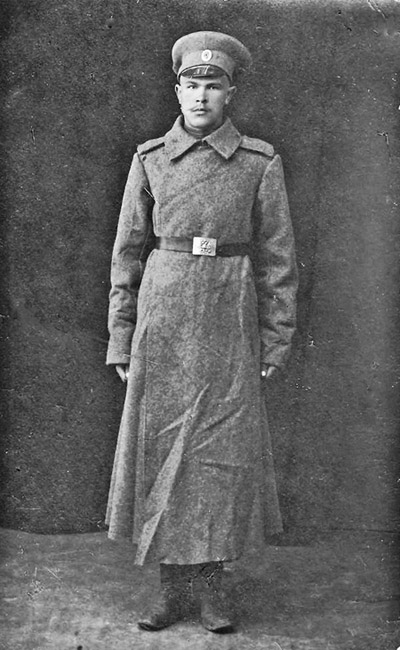
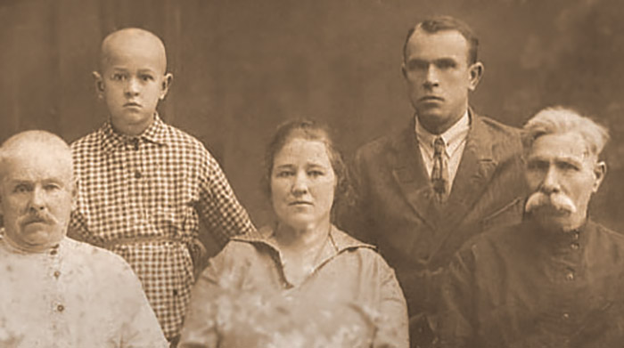
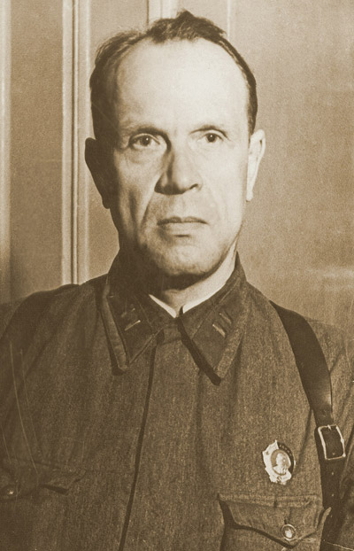
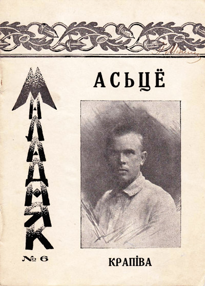
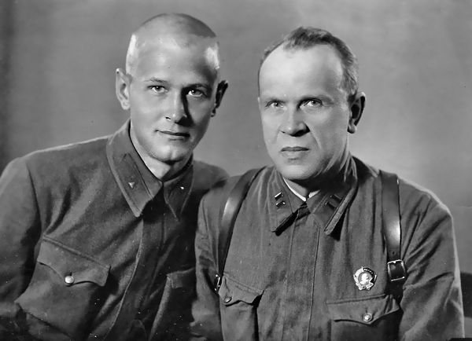
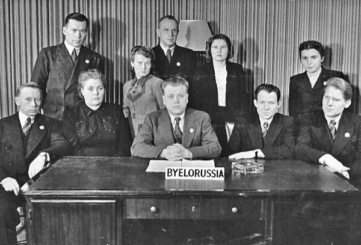
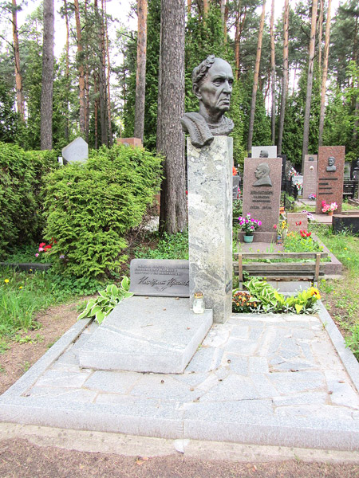

Кандрат Крапіва (Кандрат Атраховіч) нарадзіўся 5 сакавіка 1896 года ў вёсцы Нізокна Уздзеншчыне. Школьную адукацыю будучы пісьменнік атрымаў у вясковай школе, затым — у вучылішчах ва Уздзе, Стоўбцах і Койданаве (цяпер Дзяржынск). У Кандрата была выдатная памяць: сучаснікі ўспаміналі, што яму дастаткова было раз прачытаць альбо пачуць нешта — і ён мог паўтарыць. Магчыма, гэта дазволіла хлопцу экстэрнам здаць экзамены на народнага настаўніка. Але спраўдзіцца марам працаваць з вучнямі не ўдалося: адна за адной грымелі войны, рэвалюцыі — і кожная пакінула след у лёсе будучага класіка.

Кандрат Атраховiч (1913 г.)
У 1915 годзе Кандрат Атраховіч быў прызваны ў царскую армію, у 1916 годзе трапіў на Заходні, затым на Румынскі фронт. Пасля Кастрычніцкай рэвалюцыі быў дэмабілізаваны як настаўнік і вярнуўся на Радзіму, уладкаваўся ў школу вёскі Каменка на Уздзеншчыне. Тут ажаніўся са сваёй зямлячкай з вёскі Нізок Аленай Махнач,
з якой пражыў 45 гадоў, выгадаваў чацвярых дзяцей.

Кандрат Атраховiч - салдат царскай арміi.

Злева направа: цесць Канстанцін Фаміч, старэйшы сын Барыс, Кандрат Крапіва, жонка Алена Канстанцінаўна, бацька Кандраці Міхайлавіч.
У 1920—1923 гадах зноў трапіў на службу, толькі ўжо ў Чырвоную Армію. Пасля дэмабілізацыі, папрацаваўшы вясковым настаўнікам, Кандрат Атраховіч пераехаў у Мінск.

Кандрат Крапіва - афiцэр Чырвонай Арміi.
У літаратуру Кандрат Крапіва прыйшоў бліжэй да 1920-х гадоў, калі ў літаратуразнаўчых спрэчках акрэсліліся «дзве мастацкія плыні — нацыянальна-адраджэнская і пралетарска-рэвалюцыйная» (Ірына Багдановіч).
Пачынаў пісьменнік як лірык — мастак «сусветнай тугі», нават лічыў сатыру нечым несур’ёзным. Але з гадамі прыйшло жаданне «ўмяшацца ў жыццё і тое-сёе паправіць» — і адкрыўся талент «пякучкі-крапівы»: у байках, паэмах, артыкулах аўтар даў бой ворагам усяго беларускага.
Адным з першых зборнікаў гумару і сатыры Кандрата Крапівы стала кніга «Асьцё», што ўбачыла свет у бібліятэчцы «Маладняка». Таксама Кандрат Крапіва выступаў супраць звароту старэйшых пісьменнікаў да сівой даўніны і навамодных захапленняў формай маладнякоўцаў. Згодна павевам савецкага часу пільную ўвагу ён надаваў развенчванню «рэлігійных забабонаў». У 1930-я гады — «перагібам» у калектывізацыі: «Лозунг кінуў ён такі: // «Ці калгас, ці Салаўкі» (паэма «Хвядос — Чырвоны нос»).

Зборнiк сатыры i гумару «Асьцё», кнiжка «Маладняка» (1925, №6).
Пасля заканчэння Беларускага дзяржаўнага ўніверсітэта загадваў аддзелам у часопісе «Полымя рэвалюцыі» (цяпер часопіс «Полымя»). У верасні 1939 года ўдзельнічаў у паходзе ў Заходнюю Беларусь, затым — у вайне з Фінляндыяй. На Вялікую Айчынную вайну Крапіва трапіў з першага ж яе дня — у рэдакцыю газеты «Чырвонаармейская праўда», потым — газеты «За Савецкую Беларусь». У ваенны перыяд паэт выкрываў фашысцкую ідэалогію (вершы «Фрыцавы трафеі», «Біблія людаеда»), сцвярджаў маральную перавагу савецкага чалавека (драма «Проба агнём»).

Кандрат Атраховіч з сынам Барысам (пазней сын загінуў у баях пад Сталінградам у снежні 1942 года).
З 1943 года перайшоў рэдактарам у сатырычную газету-плакат «Раздавім фашысцкую гадзіну», якая пасля вайны стала часопісам «Вожык». У гэтым выданні і працягваў рэдактарскую дзейнасць да 1947 года.
Пасля 1947 года Кандрат Кандратавіч прыйшоў у навуку — абараніў кандыдацкую, доктарскую дысертацыі, загадваў сектарам мовазнаўства ў Інстытуце мовы, літаратуры і мастацтва, затым узначаліў Інстытут мовазнаўства Акадэміі навук БССР, а ў 1956 годзе стаў віцэ-прэзідэнтам акадэміі. У 1982—1989 гадах лінгвіст працягваў працу ў якасці навуковага супрацоўніка-кансультанта.

Кандрат Крапіва ў складзе беларускай дэлегацыі на 1-й сесіі Генеральнай Асамблеі ААН.
Кандрату Крапіве былі адмераны лёсам доўгія 95 гадоў, яму наканавана было перажыць жонку, дзяцей і амаль усе войны ХХ стагоддзя.
Творчасць Кандрата Крапівы была ацэнена высокімі ўзнагародамі: драматург стаў тройчы лаўрэатам Дзяржаўнай прэміі СССР: у 1941 годзе — за сатырычную камедыю «Хто смяецца апошнім», у 1951-м — за лірычную камедыю «Пяюць жаваранкі», у 1971-м — за комплекс прац у галіне беларускай лінгвагеаграфіі. У 1974 годзе стаў лаўрэатам
Дзяржаўнай прэміі БССР імя Янкі Купалы — за фантастычную камедыю «Брама неўміручасці». У 1956 годзе Кандрату Крапіве было прысвоена званне народнага пісьменніка БССР.

Магіла Кандрата Крапівы на Усходніх могілках Мінска.